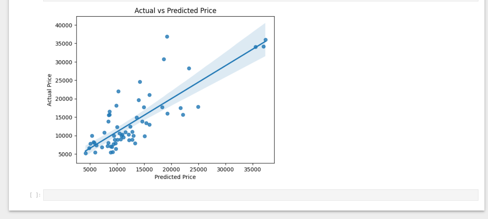
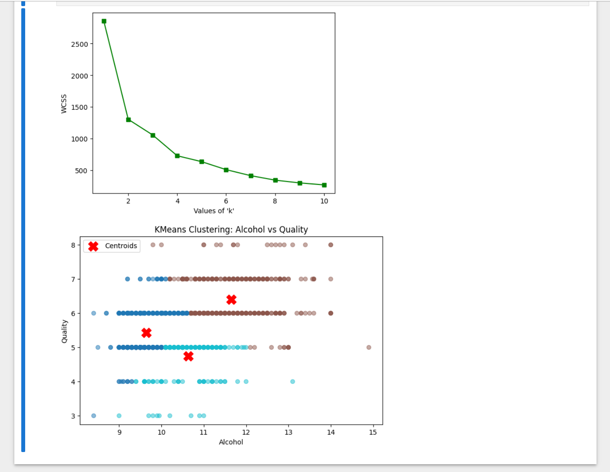

What I built.
Intro to Computers & Programming
Starting point for the entire program. Covered how hardware and software interact, basic operating system usage, CLI navigation, and file management. Introduced programming logic through flowcharts and pseudocode, and got into early JavaScript concepts including operators, conditionals, and source control with GitHub.

Turtle Graphic — complex spiral animation, Intro to Computers final project
View Live (HTML) View PDFTurtle Graphic source code — full program logic on GitHub
Programming Fundamentals
Deeper dive into application logic using JavaScript. Covered decision structures, looping, arrays, functions, and debugging. Built and tested programs using IF/Else, switch statements, counted and uncounted loops, and broke programs into reusable functions. Test plans and pseudocode were part of every assignment.


Password accepted — meets all strength criteria

Password denied — does not meet criteria
View Program Design DocPython Data Programming
Switched from JavaScript to Python and built progressively more complex programs — variables, functions, file I/O with CSVs, classes and objects, and SQLite database integration. Finished with JupyterLab and pandas for data analysis reporting. The course where Python clicked as a data tool, not just a scripting language.

Garden Planner — multi-file Python app with SQLite database, CSV import, and menu UI
View planner.py on GitHub

Machine Learning
Applied supervised and unsupervised machine learning using Python, scikit-learn, and pandas. Built and evaluated regression and classification models including linear regression, logistic regression, and KNN. Learned the hard way that preprocessing must happen after the train/test split — data leakage is a real thing. Model evaluation covered accuracy, confusion matrices, and cross-validation.

Linear regression — actual vs. predicted price with confidence interval, evaluating model fit on held-out test data
View notebook on GitHub
K-Means clustering — elbow method (WCSS) to select optimal k, and cluster visualization of alcohol content vs. wine quality with centroids
View notebook on GitHub